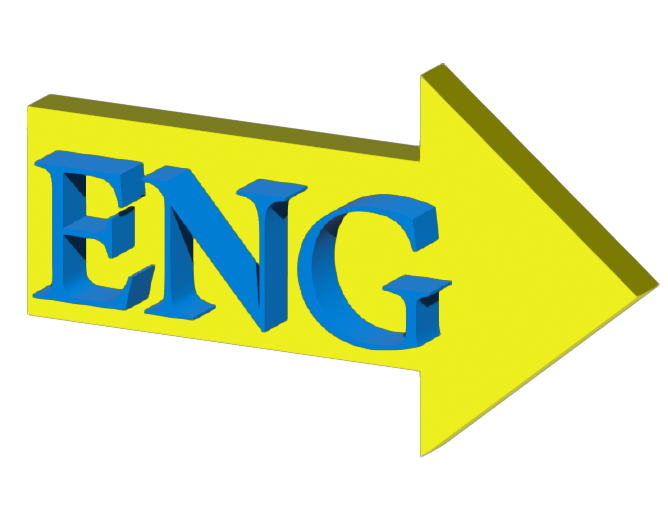

<!-- sidebar.html -->
<nav id="sidebar">
  <a href="index.html">
    
  </a>
  
  <div id="lang-switch">
    <button class="lang-btn" data-lang="zh">
      
    </button>
    <button class="lang-btn" data-lang="en">
      
    </button>
  </div>
  
  <a href="aboutMe.html" data-zh="[我]" data-en="[ME]">[ME]</a>
  <a href="page8.html" data-zh="MetroLove™:Beta 1.0" data-en="MetroLove™:Beta 1.0">MetroLove™ : Beta 1.0</a>
  <a href="page2.html" data-zh="新文艺复兴" data-en="Neo-Renaissance">新文艺复兴</a>
  <a href="page3.html" data-zh="坠入层层叠叠" data-en="Falling into Layers (and Layers)">坠入层层叠叠</a>
  <a href="page1.html" data-zh="自然剧场" data-en="Teatro Naturale">自然剧场</a>
  <a href="page4.html" data-zh="PDF to Page" data-en="PDF to Page">PDF to Page</a>
  <a href="page5.html" data-zh="EMO机" data-en="EMOji">EMO机</a>
  <a href="page9.html" data-zh="变形记" data-en="Metamorphosis">Metamorphosis</a>
  <a href="page6.html" data-zh="青春绽放" data-en="Blossom of Youth">青春绽放</a>
  <a href="page7.html" data-zh="重返1960s" data-en="Back to the 1960s">重返1960s</a>
  
  <!-- 底部语言切换按钮 -->

</nav>